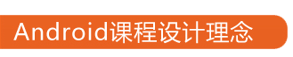

企业人才培养的摇篮--育知同创Android

- 逆向课程设计： 以企业需求决定课程设计内容，确保训练内容及深度和企业需求一致
- 模拟学员学习路线： 强调难点和复杂技能点的反复训练，力求学习效果和学习体验
- 互联网作为教学环境： 学员的日常教学和训练均在互联网线上进行
- 学习挡板监控网上学习效果： 每个学习阶段设置线上线下测试，严密监控学习效果
- 真实开发项目经验积累： 采用专业互联网企业提供的真实项目作为模拟开发

- 逆向课程设计： 以企业需求决定课程设计内容，确保训练内容及深度和企业需求一致
- 模拟学员学习路线： 强调难点和复杂技能点的反复训练，力求学习效果和学习体验
- 互联网作为教学环境： 学员的日常教学和训练均在互联网线上进行
- 学习挡板监控网上学习效果： 每个学习阶段设置线上线下测试，严密监控学习效果
- 真实开发项目经验积累：采用专业互联网企业提供的真实项目作为模拟开发